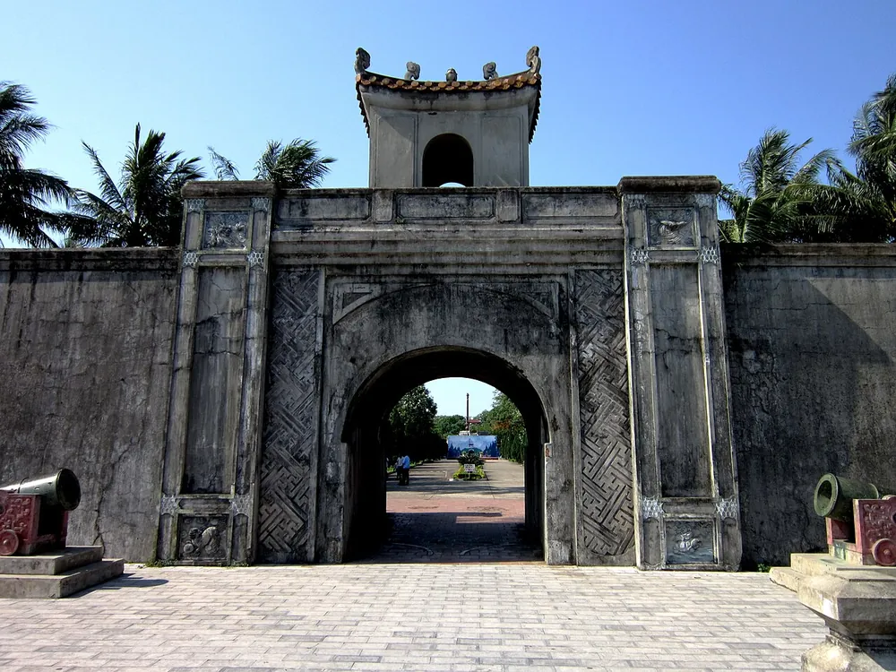
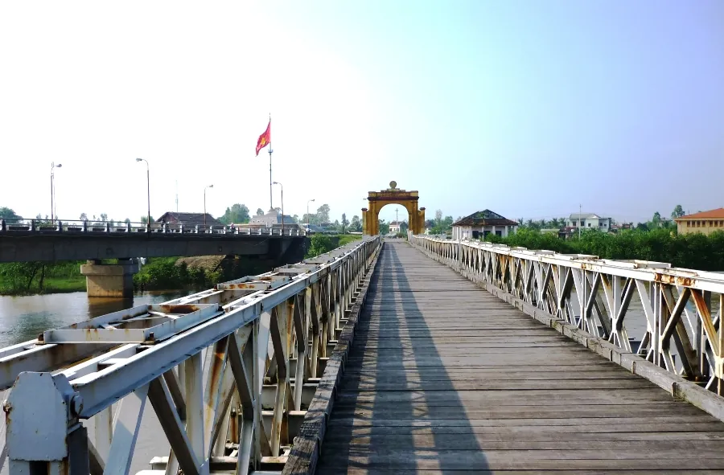
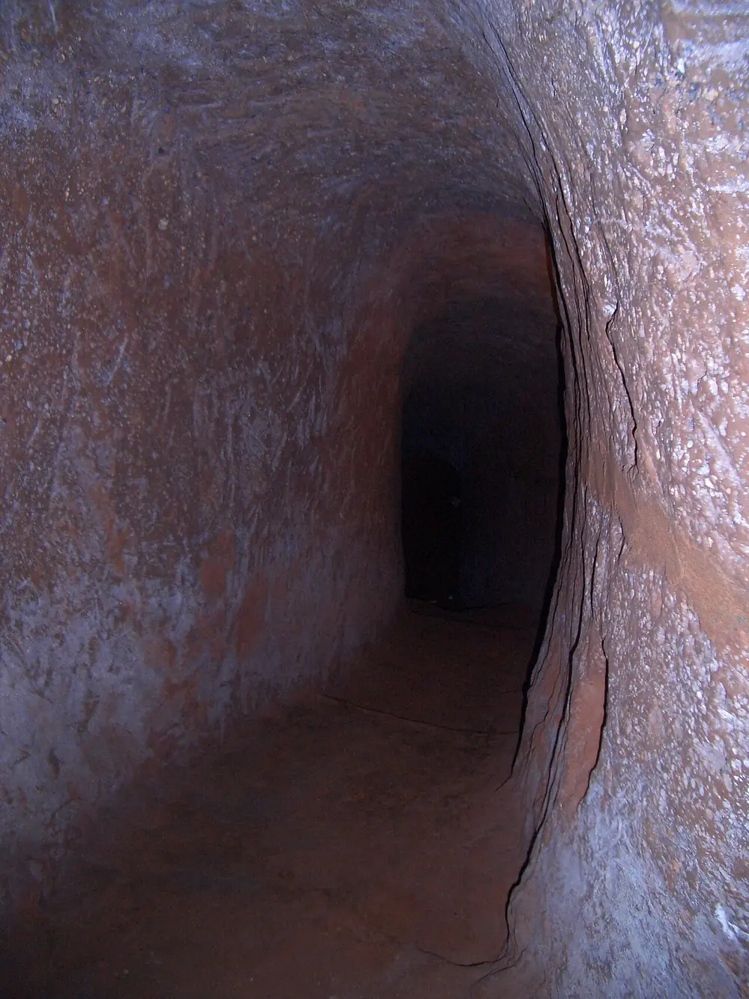
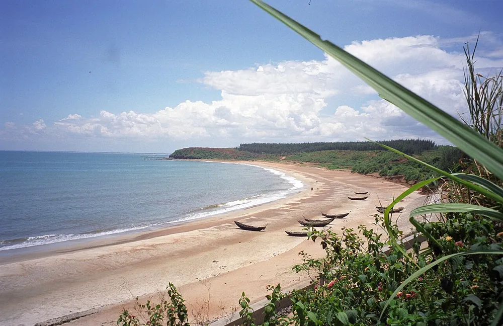
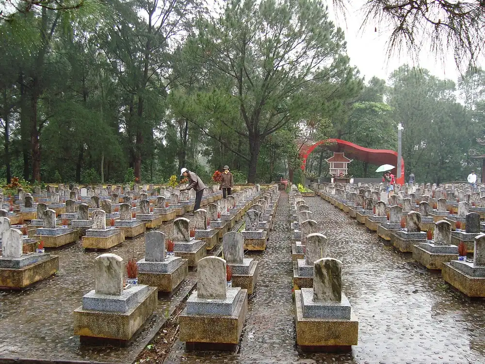

Trả lời nhanh: đến Quảng Trị bằng xe khách, bạn nên xuống ở khu vực Đông Hà để tiện lưu trú và di chuyển. Với 1 ngày, có thể đi một vòng Thành cổ Quảng Trị – cầu Hiền Lương – Địa đạo Vịnh Mốc – biển Cửa Tùng. Có thêm ngày thứ hai thì ghé Nghĩa trang Liệt sĩ Quốc gia Trường Sơn, La Vang hoặc lên Khe Sanh, Lao Bảo theo Quốc lộ 9.
Trước khi đi: "Quảng Trị" nào?
Từ ngày 1/7/2025, tỉnh Quảng Bình và tỉnh Quảng Trị hợp nhất thành tỉnh Quảng Trị mới. Bài này nói về vùng Quảng Trị cũ — Đông Hà, thị xã Quảng Trị, Gio Linh, Vĩnh Linh, Hải Lăng, Hướng Hóa — nơi tập trung các di tích lịch sử quen thuộc. Khi đặt vé, hãy nói rõ bạn muốn xuống ở Đông Hà hay thị xã Quảng Trị cũ, đừng chỉ nói "đi Quảng Trị", vì danh sách chuyến bây giờ có thể gồm cả điểm ở Đồng Hới.
Xuống xe ở đâu cho tiện?
- Khu vực Đông Hà: nhiều khách sạn, nhà nghỉ, quán ăn và dịch vụ thuê xe máy, taxi. Hợp làm "căn cứ" để đi các điểm phía bắc (Hiền Lương, Vịnh Mốc, Cửa Tùng) và phía tây (Khe Sanh, Lao Bảo). Lịch trình riêng cho phía bắc: du lịch Vĩnh Linh bằng xe khách trong 1 ngày.
- Thị xã Quảng Trị cũ: ngay Thành cổ và sông Thạch Hãn, gần La Vang. Nhiều xe chạy Quốc lộ 1A đi qua đây; bạn có thể xin xuống nếu muốn ghé Thành cổ trước.
Xe đường dài thường tới nơi vào sáng sớm hoặc đêm khuya. Hãy hỏi rõ thời gian dự kiến đến nơi để đặt phòng nhận sớm hoặc hẹn người đón, và xác nhận lại điểm trả khi xe sắp tới.
Những điểm nên ghé
Thành cổ Quảng Trị và sông Thạch Hãn

Ảnh: Cổng Thành cổ Quảng Trị. Tác giả: Bùi Thụy Đào Nguyên, Wikimedia Commons, giấy phép CC BY-SA 3.0 (đã thu nhỏ).
Thành cổ gắn với cuộc chiến đấu 81 ngày đêm mùa hè năm 1972. Khu di tích nay là công viên tưởng niệm yên tĩnh, có đài tưởng niệm ở trung tâm, dấu tích tường thành và hào nước. Bên cạnh là sông Thạch Hãn — nơi nhiều người thả hoa, thả đèn tưởng niệm. Nên đến buổi sáng sớm cho mát và giữ trang phục, thái độ trang nghiêm.
Đôi bờ Hiền Lương – Bến Hải

Ảnh: Cầu Hiền Lương nhìn từ bờ Nam. Tác giả: Bút Chiến, Wikimedia Commons, giấy phép CC BY-SA 3.0.
Cầu Hiền Lương bắc qua sông Bến Hải ở vĩ tuyến 17, từng là giới tuyến tạm thời chia cắt hai miền sau Hiệp định Genève 1954. Hai bờ có cột cờ, nhà trưng bày và cụm tượng đài; đi bộ qua cầu là trải nghiệm nhiều người nhớ lâu.
Địa đạo Vịnh Mốc

Ảnh: Đường hầm trong Địa đạo Vịnh Mốc. Tác giả: Margrethe Store, Wikimedia Commons, giấy phép CC BY 2.0 (đã thu nhỏ).
Hệ thống đường hầm nhiều tầng do người dân Vĩnh Linh đào để sống và chiến đấu trong chiến tranh, có cả chỗ ở của các gia đình, giếng nước, nơi sinh nở. Lối đi thấp và hẹp; người lớn tuổi, người sợ không gian kín nên cân nhắc và đi chậm.
Biển Cửa Tùng, Cửa Việt

Ảnh: Bãi biển Cửa Tùng. Tác giả: upyernoz, Wikimedia Commons, giấy phép CC BY 2.0 (đã thu nhỏ).
Cửa Tùng là nơi sông Bến Hải đổ ra biển, bãi cát thoai thoải, gần Vịnh Mốc nên dễ ghép chung một buổi. Cửa Việt ở phía nam hơn, thuận đường từ Đông Hà. Mùa hè là thời điểm tắm biển đẹp; mùa mưa bão nên kiểm tra thời tiết trước.
Nghĩa trang Liệt sĩ Quốc gia Trường Sơn

Ảnh: Nghĩa trang Liệt sĩ Quốc gia Trường Sơn. Tác giả: Liftold, Wikimedia Commons, giấy phép CC BY-SA 3.0 (đã thu nhỏ).
Nằm ở Gio Linh, là nơi yên nghỉ của rất nhiều liệt sĩ hy sinh trên tuyến đường Trường Sơn. Nhiều gia đình đi xe khách ra viếng thân nhân; nên chuẩn bị hương hoa và hỏi trước đường đi vì khu nghĩa trang rộng.
La Vang
Ở Hải Lăng, gần thị xã Quảng Trị cũ, là trung tâm hành hương Công giáo lớn. Vào dịp lễ hội, lượng khách đông, xe và chỗ ở quanh khu vực kín nhanh — nên đặt sớm.
Khe Sanh – Lao Bảo (miền tây Hướng Hóa)
Theo Quốc lộ 9 lên phía tây là vùng đồi núi Hướng Hóa với di tích sân bay Tà Cơn, đồi cà phê, đèo dốc và cửa khẩu Lao Bảo. Đường có đoạn quanh co; nếu dễ say xe, xem mẹo chọn vị trí khi dễ say xe.
Gợi ý lịch trình 1 ngày (có phương tiện riêng)
- Sáng: Thành cổ Quảng Trị, dạo bờ sông Thạch Hãn.
- Trưa: lên phía bắc tới đôi bờ Hiền Lương – Bến Hải, nghỉ ăn trưa.
- Chiều: Địa đạo Vịnh Mốc, sau đó ra biển Cửa Tùng.
- Tối: về Đông Hà nghỉ hoặc ra điểm đón xe đêm đi tiếp.
Lịch này khá dày. Nếu đi cùng trẻ nhỏ hoặc người lớn tuổi, bớt một điểm để có thời gian nghỉ.
Gợi ý lịch trình 2 ngày
- Ngày 1: như lịch 1 ngày ở trên, nghỉ đêm ở Đông Hà.
- Ngày 2 – lựa chọn A: Nghĩa trang Liệt sĩ Quốc gia Trường Sơn buổi sáng, chiều ghé La Vang hoặc biển Cửa Việt.
- Ngày 2 – lựa chọn B: đi Quốc lộ 9 lên Khe Sanh, Tà Cơn, cửa khẩu Lao Bảo, chiều tối về Đông Hà.
Đi lại giữa các điểm thế nào?
Các điểm tham quan nằm rải rác cách nhau hàng chục cây số, xe buýt không đi qua hết. Khách đi xe khách đến thường chọn: thuê xe máy (nếu quen đường và có bằng lái), taxi hoặc xe công nghệ cho từng chặng, hoặc thuê xe ô tô theo ngày khi đi nhóm, đi cùng gia đình. Nếu cần xe 4–7 chỗ, bạn có thể liên hệ Vũ Vé Xe qua mục thuê xe dịch vụ để được tư vấn theo ngày đi.
Giờ mở cửa và vé tham quan các di tích có thể thay đổi; hãy kiểm tra trước khi đi, và xem thời tiết trước chuyến đi — vùng này có mùa mưa bão khá rõ vào cuối năm và nắng nóng gay gắt giữa hè.
Đặt vé xe đến và rời Quảng Trị
Quảng Trị nằm trên trục Bắc – Nam nên có xe từ nhiều tỉnh. Một số trang tuyến để bạn tham khảo:
- Vé xe Hà Nội đi Quảng Trị — chiều về xem xe Quảng Trị đi Hà Nội.
- Vé xe Sài Gòn đi Quảng Trị.
- Vé xe Đà Nẵng đi Quảng Trị và Huế đi Quảng Trị.
Nhắn Zalo cho Vũ Vé Xe ngày đi, số khách, điểm lên và điểm muốn xuống (Đông Hà hay thị xã Quảng Trị cũ) để được kiểm tra chuyến phù hợp.
Câu hỏi thường gặp
Đi xe khách đến Quảng Trị du lịch nên xuống ở đâu?
Nếu ở lại nhiều ngày, xuống khu vực Đông Hà vì có nhiều chỗ lưu trú và dễ thuê phương tiện. Nếu muốn ghé Thành cổ trước, có thể xin xuống ở thị xã Quảng Trị cũ khi xe chạy qua Quốc lộ 1A. Hãy báo nhà xe điểm xuống khi đặt vé.
Quảng Trị đi trong 1 ngày được những đâu?
Một ngày đủ cho Thành cổ Quảng Trị buổi sáng, cầu Hiền Lương – sông Bến Hải buổi trưa, Địa đạo Vịnh Mốc và biển Cửa Tùng buổi chiều, nếu bạn có phương tiện riêng hoặc thuê xe theo ngày.
Sau sáp nhập, Quảng Trị có gồm Quảng Bình không?
Có. Từ ngày 1/7/2025, tỉnh Quảng Bình và tỉnh Quảng Trị hợp nhất thành tỉnh Quảng Trị. Khi đặt vé xe, hãy nói rõ bạn muốn xuống Đông Hà, thị xã Quảng Trị cũ hay Đồng Hới để tránh nhầm.
Liên hệ Vũ Vé Xe
Zalo / điện thoại: 0386 003 098 · 0963 307 942. Vũ Vé Xe hỗ trợ đặt vé xe khách và thuê xe.